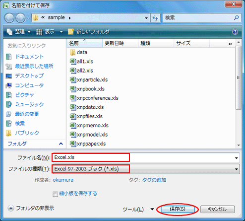
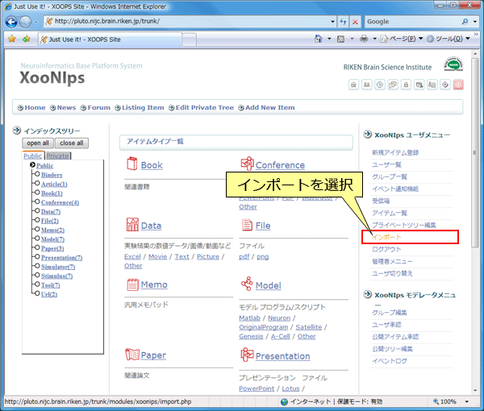
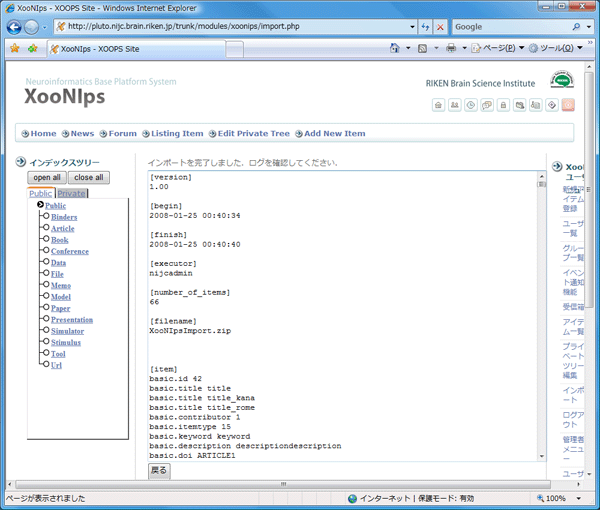

|
 |
第2章 プログラムの利用手順
1. Excel ファイルの準備
まず，XooNIps に登録したいデータを 1行 1アイテムで記述した Excel 表を準備します．Excel 表に入力するメタデータの項目はアイテムタイプ毎に異なるため，複数のシートもしくはファイルに分けてデータを入力する必要があります．雛型となる Excel ファイルは配布物の sample ディレクトリ内に用意されていますのでそちらを必要に応じてコピーしてご利用下さい．配布物に含まれるサンプルファイルについては『3章Excel ファイルのサンプル集』を参照してください．

作成した Excel 表を Excel 97-2003 ブック形式 で任意のファイル名を付けてで保存します．

2. XooNIps のインポート形式のファイルへの変換
作成し保存した Excel ファイルを以下のように excel2xoonips コマンドを実行して XooNIps のインポート形式のファイルに変換します．
$ excel2xoonips [-i] [-c] Excel.xls XooNIpsImport.zip
このとき excel2xoonips コマンドに与える引数は以下のようになります．
-
-c : XooNIps v3.4 のインポート形式のファイルに変換します．デフォルトはXooNIps v4.0 のインポート形式のファイルに変換します．
-
-i : Excel ファイルがインデックスのみの場合に指定します．XooNIps v3.4 のみに有効です.
-
Excel.xls: 変換元のデータが記述された Excel ファイル -
XooNIpsImport.zip: 変換先の XooNIps のインポート形式のファイル
3. XooNIps へのインポート
出力された XooNIps のインポート形式のファイルをサイトへインポートします．
3.1. XooNIps バージョン3.4
-
ユーザメニューから『インポート』を選択します．
 -
XooNIps のインポート形式のファイルおよびインポート先インデックスを指定し，『次へ』ボタンを押下します．

-
インポートの確認画面で衝突するアイテムの確認などを行います．衝突するアイテムがない場合警告は表示されません．また，入力されたファイルに不整合がある場合，この画面でインポートできない旨が表示されます．インポート可能な場合『インポート』ボタンを押下してインポート操作を実行を開始します．

-
以上でインポートが完了します．

3.2. XooNIps バージョン4.0
-
ユーザメニューから『アイテムインポート』を選択します．

-
XooNIps のインポート形式のファイルおよびインポート先インデックスを指定し，『登録』ボタンを押下します．

-
以上でインポートが完了します．

| |
|
|

|